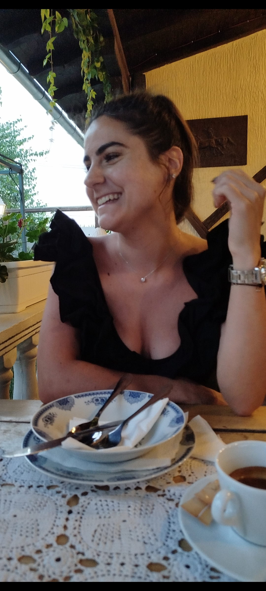

Hvala ti za najlepših 7 meseci, volim te!
(Dvoklikni na sliku za još nešto lepo!)
Želim ti reći koliko sam srećna što te imam u svom životu. Svakim danom me iznova inspirišeš tvojom dobrotom, osmehom i nežnošću. Ovi meseci su mi bili najlepši i znam da će svaki sledeći biti još lepši uz tebe. Hvala ti za sve!